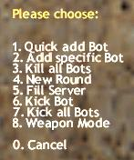
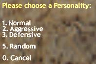
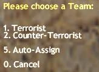
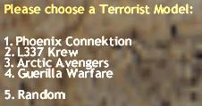
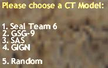
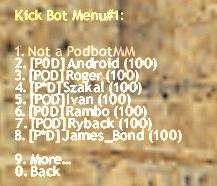
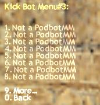
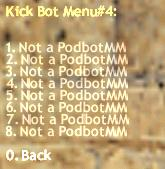
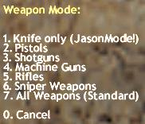

|
Important:
Since v2.6 A few new features have been added and some commands have been depreciated.
- The PODBot User Menu (pb menu)
Pressing the "=" key in game a Menu with the following options should appear on your Screen (since V3 the menu is
available also on dedicated server):

This is the PODBOT User Menu.
1. Quick Add Bot - This does what it says. It quickly adds a Bot giving him a random name, team, skill and model. Skill will be chosen randomly between your minbotskill/maxbotskill values specified in podbot.cfg.
2. Add specific Bot - Allows you specify all things (except name) for adding a single Bot.

This lets You choose a skill for the specyfic Bot.

This lets You choose a personality for the specyfic Bot.

This lets You choose a team for the specyfic Bot.

This lets You choose a model for the specyfic Bot (T team).

This lets You choose a model for the specyfic Bot (CT team).
3. Kill all Bots - Kills all Bots in all Teams. You can use this to end Rounds faster if there
aren't any humans alive and you don't like watching Bots playing better than you 
4. Newround - Same as above, but kills every Client including human players.
5. Fill Server - Fills all free Server Entries with Bots (until reaching max_bots value).
After selecting this option you can specify the team or to auto-assign them. If you especially select a team for the Bots the
Server Variables " mp_autoteambalance" and
" mp_limitteams" will be set to 0 (thus not caring about balancing teams
anymore) and all Bots will only join 1 Team. You can use for example this to play alone or with your friends against
all Bots.
6. Kick Bot - Selecting this option opens the new selection, where You can choose which one
bot You wish to kick. There are 4 pages (for 32 players). If some slot is free or is used by some human-player or other bot
then You will see the info for that slot "Not a PodbotMM".

This lets You choose the Bot You want to kick - page 1.

This lets You choose the Bot You want to kick - page 2.

This lets You choose the Bot You want to kick - page 3.

This lets You choose the Bot You want to kick - page 4.
7. Kick all Bots - Kicks off all Bots from the Server.
8. Weapon Mode - Opens another Sub-Menu where you can select the Weapons Bots will buy (and use
in combat). Selecting Knife Mode will also turn on Jason-Mode.
Selecting Standard Weapons will turn it off again.

This lets You choose a weapon mode for bots.
- FunModes
This was one of the features removed when PODBot was ported to metamod.
- Ordering Bots through Radio Commands
You can use some of the Radio Commands to get more support from your Bots if Your
cvar pb_radio is set to 1 in podbot.cfg (default is 1).
NOTE: When you issue a 'Follow me' Command Bots won't
follow you in 3 cases:
- The Bots have their own will and they issue a "Negative" if they don't
want to follow you.
- They don't see you.
- They see an enemy and engage the target.
A Terrorist Bot carrying the C4 or picking it up, will also issue a
"Follow Me" sometimes to have some assistance with him.
They also do some other Radio Commands like "Need Backup", "
Enemy down", " Enemy spotted", "
I'm in Position" (to tell you he's camping) but not very often, otherwise it would
surely get on your nerves...
- Summary of Bot Reactions to Radio Commands
- Follow me - Forces Bots in the near to follow you. You can specify the maximum number
of bots following in the podbot.cfg by the cvar pb_numfollowuser (defaults to 3).
- Hold this Position - Makes a Bot who's following you, stay a while at that position
and look around for enemies.
- Taking Fire, need assistance - Makes all living Bots (not engaged in a Fight) run to
your position to assist you.
- Need Backup - Basically the same as above, but limited to distance and also
the Bots use it sometimes to get some support.
- Storm the Front! - Mighty command! Forces all Bots in the near to rush in the
direction you're pointing to when using that command. Basically their level of aggression is increased so
a pathetic frightened Bot could also turn around and flee.
- Get in position... - Bots in the near will try to take a covered position and stay
there until they either encounter an enemy, you order them to leave, or they waited too long.
- Go,go,go - If a Bot follows you, this commands stops him from following. If there
are other Bots in the near, they will stop camping and going to roam the map again (normally used in combination with
"Get in position...")
- Team, Fall Back! - Opposite of "
Storm the Front".
Increases Fear and decreases aggression of Bots in the near so that they are more likely to fall back and stay covered
for a short period.
- Bot Skill differences
There is a file called botskill.cfg were you can tweak most skill parameters of the bots by editing the file 'botskill.cfg'
with any text-editor.
Also take a look into 'podbot.cfg' to adjust some more things to your liking...settings for the Bots if you find them too
easy/too hard.
First, Bots with low skills will pause/camp longer and more often, Bots with low skills have a bigger surprise time and they
shoot slower and are lucky if they hit something..
Then there are minor behaviour differences. For example Bots with a skill above 80 use the Knife more often if you're
near them.
If you want to get headshots all the time and attack really fast - add some Bots with a skill of 100.
- Bot Personalities
There are 3 different Personalities in POD now, if you have 'pb_detailnames'
turned on they are shown through the Prefixes like this:
- [P*D] = Agressive Bot
- [POD] = Normal Bot
- [P0D] = Defensive Bot
These personalities affect bot's buying system, they influent taking the decision about paths (more aggresive bots take
shortest paths, normal bots care about the history (danger of the path) and the distance, deffensive bots are taking
the most safe paths. You can specify which one type of personlity has to be added to the game by pb add command
(or pb fillserver or from podbotmenu) .
- BotChats
The botchats are files which store what the bot can say during the game and when it's spectating.
They are located in the podbot\botchats Folder where you installed the Bot.
The translated versions (except the German and English ones) don't use the new Text replacements and the dynamic keyword
chat is still in English language.
Rename and copy one of these to "botchat.txt" in the main podbot folder to have your localized Bot Talk.
These translated versions of the Botchat are available:
- BotChat.txt (default english version)
- BotChatBulgarian.txt
- BotChatCroatian.txt
- BotChatCzech.txt
- BotChatDanish.txt
- BotChatDutch.txt
- BotChatEnglish.txt
- BotChatFinnish.txt
- BotChatFrench.txt
- BotChatGerman.txt
- BotChatHungarian.txt
- BotChatIceland.txt
- BotChatIndonesian.txt
- BotChatItalian.txt
- BotChatNorwegian.txt
- BotChatPolish.txt
- BotChatPortuguese.txt
- BotChatRomanian.txt
- BotChatRussian.txt
- BotChatSerbian.txt
- BotChatSpanish.txt
- BotChatSwedish.txt
- BotChatTagalog.txt
- BotChatTurkish.txt
- Auto add/kick bot function
What do the people want? They want to keep as constant the number of bots+players at the server, but sometimes
this was not working correct in old PB2.5 (client connection failed - bot didn't rejoin back) - sometimes this made
a server empty. Another people want the same but with the possibility of some manual control of bots on the server
(some manual kick, some manual add, some removebots and some fillserver - these function have to be still available).
How to solve this?
Now in code is a variable invisible for user-admin. It's name is g_iPeoBotsKept - this variable defines how many
bots+players shuld be still on the server. This name is only here for explaining how this is working now.
The meaning of pb_maxbots and pb_minbots - these are limits only but with possibility change them from console by:
pb_maxbots {new_value}
pb_minbots {new_value}
The pb_maxbots variable defines how many bots+players will be on the server when You >B< will use pb fillserver
command (of course - if there are on the server some sufficient slots for all of them) or add commands (don't get it
as the value which would mean automatically the amount of bots and players on the server after writing it - it's not
the same as max_botquota from CSBot - it may reach this limit (pb_maxbots), but it must not do it - depands of the
server's admin what will he decide during the game).
The pb_minbots variable defines the minimum number of bots must stay on the server when:
a) You will call pb removebots command
b) some of them will be kicked because of joining some people.
You can define for ecample pb_maxbots as 12 and pb_minbots as 2 and put 8 add commands in podbot.cfg - then g_iPeoBotsKept
is calculated (automaticaly) as 8 - for example - because it's incremented every single add command. If You use
fillserver - this variable will reach 12 (in our example) - in the case of calling fillserver g_iPeoBotsKept is
overwitten by pb_maxbots variable.
NOTE:
On listenserver except add commands also the host (the player-LS owner) is calculated (added) to g_iPeoBotsKept.
So in the case if he has - for example - 8 add commands in his podbot.cfg - g_iPeoBotsKept variable will be 9
(at start host and 8 bots on the server).
At the first map (server started) the first bots added to the server are from podbot.cfg - these
added by add commands or fillserver. If there are 4 add commands - first will enter the game these 4 specyfied
by these commands and after - if there is also a fillserver command - automaticaly will be added some other bots
(according to other parameters of the fillserver command, pb_maxbots and other parameters).
So - You started the game with 8 bots. Then one player is connected and entered the game, then one bot is automaticaly
kicked. Player is disconnected - bot is automaticaly added. This is checked every frame - if still g_iPeoBotsKept is
the same like number of bots+players.
If You decide manualy add some bot (from pb menu or by pb add command from console) - bot will be added according
to this what You specify (if You type pb add 100 2 2 3 "Rocky" - just exactly this bot will be added - not some bot
automaticaly). In this case g_iPeoBotsKept variable will be automaticaly incremented by 1. If You decide to kick manually
some bot - bot will be kicked. If from pb menu - You can select which one should be kicked from menu (4 pages),
if from console:
pb remove #bot_id
or
pb remove bot_name
bot_id means the same like id for standard kick command.
In this case g_iPeoBotsKept variable will be automaticaly decremented by 1. Of course all here is valid only if You are
in range min/max bots You specyfied before.
If You decide to use fillserver and You have actualy 10 bots+players on the server - bots will be added automaticaly
until reaching bots + players = pb_maxbots (in our example 12). In this case g_iPeoBotsKept will be overwritten by
pb_maxbots variable (12).
The same for removebots - If You decide to use this command, bots will be removed from the server until reaching
bots + players = min_bots (in our example 2). In this case g_iPeoBotsKept variable will be overwritten by min_bots
variable (2). If You will write in console :
pb_maxbots 6
it will decrase (if is grater) the g_iPeoBotsKept variable to 6 and some bots will be probably kicked.
If You will write in console:
pb_minbots 7
it will incrase (if is lower) the g_iPeoBotsKept variable to 7 and some bots will be probably added. This "probably"
above is depanding of actual situation on the server - if the number of human-players lets kick or add some bots in these
both situations.
Connecting to the game more human-players than is actually calculated g_iPeoBotsKept will not affect this variable.
If You have this variable as 10 and there is 12 human-players - of course You can't kick more bots.
All here can work automaticaly and there is still some control and possiblity of manual bots management.
If You want some delay for bots re-join at new map start then write in console this line:
pb_mapstartbotdelay 10
and bot will be joined on the new map after 10s since map start. The same command You can write in podbot.cfg.
If - because of some reason - You don't like this function (auto add/kick bots) You can simply disable it by writting
in console:
pb_maxbots 0
(or in podbot.cfg file).
In this case the value of g_iPeoBotsKept will follow the current number of bots + players, but no one bot will
be automatically added or kicked. Enabling back the function (by typing some different than 0 number for
pb_maxbots) should change nothing on the server (no one bot should be added or kicked after enabling this function) except
the situation You specify some pb_maxbots less than current number of bots+players on the server (in this case some of them
will be kicked until reaching bots+players = max_bots).
You can also keep the number of bots which will match the amount of humans on the server by specyfing pb_bot_quota_match
grater than 0 (for example if You want to have 3 bots for each human, You need to write pb_bot_quota_match 3).
In this case the function auto add/kick bot will not be working and number of bots will be limited only
by pb_minbots/pb_maxmaxbots settings and will match humans. To prevent have the server empty it's recommended in this case
usage pb_minbots grater than 0. The work of the function matching humans on the server is stopped by usage commands
pb fillserver and pb removebots (both these commands set the value of pb_bot_quota_match to 0).
- Known Limitations/Bugs/Problems still present
Bots sometimes fall from high places
Sometimes stuck in other Bots (but should unstuck after less than 5 secs)
Sometimes stuck in corners (see above)
Counter Bots sometimes fail to detect the bomb (but happens to humans also, so what?)
Bots lack advanced teamplay (very basic team-play and affection is present)
Bots are too easy to snipe, see above
Bots aren't affected by darkness
Bots don't drive vehicles, hopefully in the 'Source' engine they will
Due to HL Engine Limitations Bots can see through func_illusionaries (e.g. curtains in cs_747, doors in cs_backalley)
Bots don't cheat
- Planned for future Releases
Refining Combat Behaviours and Weapon Choices
Customisation of Personalities incorporated into a Clan-System
Advanced Team Behaviour
Vehicle support
Elimination of most remaining Bugs and Limitations of the above list
|
|